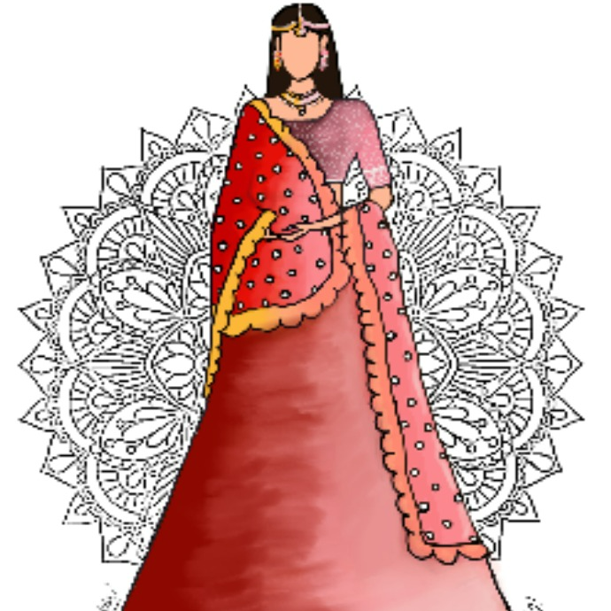

Language of Justice: Meet the Supreme Court's Pioneering Gender Stereotype Reform
In a monumental stride toward gender equality and progressive values, the Supreme Court of India has issued a pioneering handbook, urging a significant transformation in the use of language within
the Indian legal system. This powerful move signifies a push towards liberating discourse from outdated terminology, fostering a more inclusive, equitable and just society.
The "Handbook on Combating Gender Stereotypes" boldly identifies gender-biased phrases that have permeated Indian courtrooms, perpetuating harmful stereotypes.
This handbook systematically unveils the damage these terms have inflicted on women and non-binary individuals, while offering alternative, gender-neutral language to promote fairer judicial dialogue.
One of the significant aspects of this change is the elimination of stereotypes about women's inherent characteristics, emphasizing gender should not determine one's capacity for rational thought.
This shift aligns with a commitment to equity and the principles of the Indian Constitution.
The handbook's central focus is on language in sexual violence cases, rectifying the diminishing importance of consent in such cases. The Supreme Court strives to rectify this
systemic injustice and champion the significance of consent which marks a significant stride towards supporting victims of sexual violence.
Chief Justice of India, Dhananjaya Y. Chandrachud, underscored the profound influence of language in the legal sphere. The words employed by judges convey their interpretation of the law and societal perception, leading to progressive changes in legal terminology.
For instance, he pointed to the transformation of the Code of Civil Procedure 1908, which formerly referred to individuals without financial means as "paupers." This reference has long been viewed as derogatory and was amended to "indigent" instead emphasizing a shift towards recognizing the dignity of an individual.
Similarly, now the handbook replaces words like “Unwed mother” with “mother” and “eve teasing” with “street sexual harassment” to kill prejudiced judgments directly at their roots.
The impact of this decision by the Supreme Court cannot be overstated. It marks a turning point in the struggle for gender equality, a moment when the legal system aligns itself more closely with the principles of justice and fairness. Women , who have long been victims of harmful stereotypes,
can now expect more equitable treatment at least within the vocabulary of the legal system by challenging the long-standing cultural assumptions that have prevailed in Indian society and casts a spotlight on the need for societal change.
While this change is undoubtedly a milestone in the fight against gender stereotypes, it is important to acknowledge the potential challenges and resistance that may arise. Cultural assumptions that have been deeply ingrained for generations may not dissipate overnight.
The persistence of these stereotypes in Indian society might influence how effectively the language changes are implemented.
It's time to ask ourselves: Is this not the change we've been waiting for? What does this transformative shift mean for the traditionally marginalized genders in India? As we contemplate these questions, we must remember that change is a process and this decision will likely
have a downstream effect on wider Indian society.
The decision of the Supreme Court stands as a testament to the power of language, the quest for justice, and the unwavering spirit of those who dare to challenge entrenched stereotypes in pursuit of a brighter and more equitable future.
- Aamina Azhar
Band Baaja Baarat: How she started it all

When Bollywood actor Anushka Sharma walked out of the door, dressed in a beautiful blush pink Sabyasachi lehenga in December 2017, something permanently shifted in the Indian wedding industry…
In our vibrant culture, wedding ceremonies have always been a magnificent display of tradition and opulence. Reds and maroons have traditionally been integral to the cultural and historical context of weddings,
particularly in the Indian context. They symbolize love, passion, and the grandeur of the occasion. However, as we embrace a more modern and globalized world, our perspectives on weddings have evolved, and this evolution is reflected in the choice of pastel colour schemes.
The choice of bridal attire has always played a pivotal role, and in recent times, there has been a noticeable shift towards pastel shades, with a particular emphasis on soft pinks, peaches, and ivories. Pastels, with their soft and muted tones, exude a sense of understated elegance and poise.
It is perfect for couples who wish to emphasize the personal and emotional aspects of their weddings over the ostentatious. This transition is an essential part of a broader societal shift towards celebrating love for what it truly is - a personal, emotional,
and deeply meaningful commitment. The rise of pastels in celebrity weddings can be seen as a response to the changing dynamics of the world with western concepts like minimalism taking precedence. While pastel shades do have their charm or place in bridal couture, it is essential to remember
the importance of preserving our cultural heritage.
The beauty of these weddings lies in their fusion of ancient customs with modern sensibilities. Some would say that by introducing these color schemes, they have given into westernized standards. However, they have found a way of keeping true to Indian culture while letting personal aesthetics lead the way.
It gives insight to what might become the future of wedding culture in our diverse nation.
However, trends come and go, but there is something timeless about the classic reds and maroons that have adorned Indian brides for centuries. Bridal attire remains an important symbol of cultural identity, and for generations, they have continued to follow the unwritten law. These deep, rich colours are entrenched in the religious and cultural symbolism of weddings. Red is not merely a hue; it represents love, passion, and the auspicious beginning of a new life. After all, tradition cannot disappear overnight, and you would agree, there's nothing more beautiful than a bride adorned in the classic crimsons!
-Sravya Satpathy
Echoes of Home: Festivals in Distant Lands
As a teen, the decision to pursue higher education in a different city or country is often accompanied by a mixture of excitement and apprehension. While you embark on a journey filled with aspirations ,
you experience a pang of homesickness as the seasons change and the calendar marks the arrival of festive times. While others revel in the festivities with their families, you find solace in photographs
and video calls that bridge the geographical gap but can never fill the emotional void.
Amidst this ache of separation and standing up for yourself alone everyday, there is growth. It pushes you to adapt and create your traditions, to seek out others who share similar experiences,
and to find beauty in the diversity of celebrations around you. After spending three years in this city, you eventually discover a second family, one that stands for you. You make shared experiences with
them that becomes a emotional tapestry that binds your hearts and souls together.
It's been three long years since I last set foot in my hometown during Pujo, and every fiber of my being aches for every cherished detail of that time. The sheer joy of getting all dolled up,
heading to the bustling pandals, and gazing upon the resplendent idols of Durga Ma.The profound absence of inclusivity within our educational institutions and workplaces only serves to intensify
the emotional struggles we face. It's disheartening to witness colleges frequently overlooking the significance of major cultural and religious festivals. It becomes a constant battle to balance
academics or professional commitments with the yearning for a sense of belonging and familiarness. The question is, how do you still hold on to your roots when higher education forces us to experience these joyous occasions away from home?
Finally, we hold onto the hope that, someday, we can find a way to celebrate our festivals with the same fervor and togetherness that we experienced in our childhood homes.